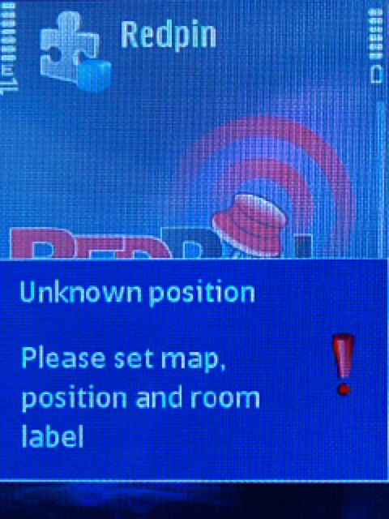
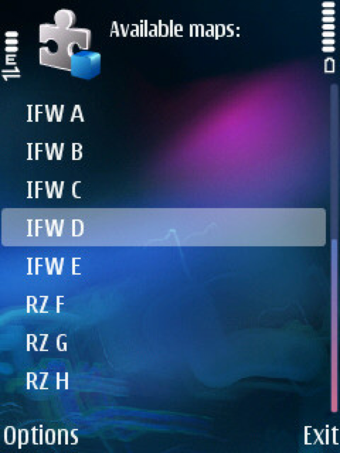
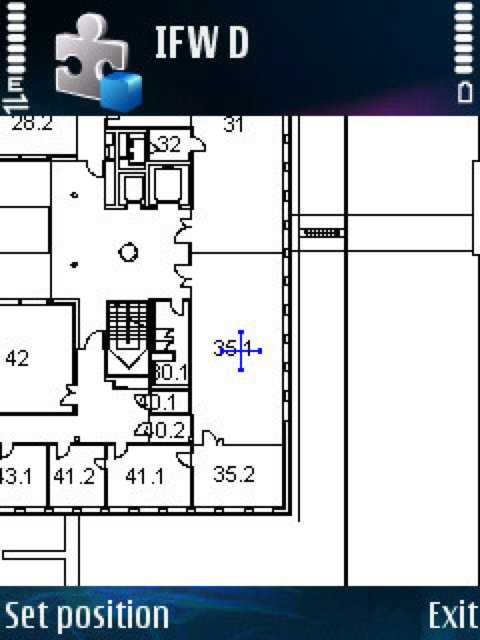
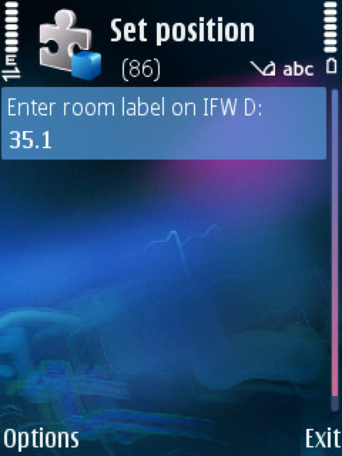
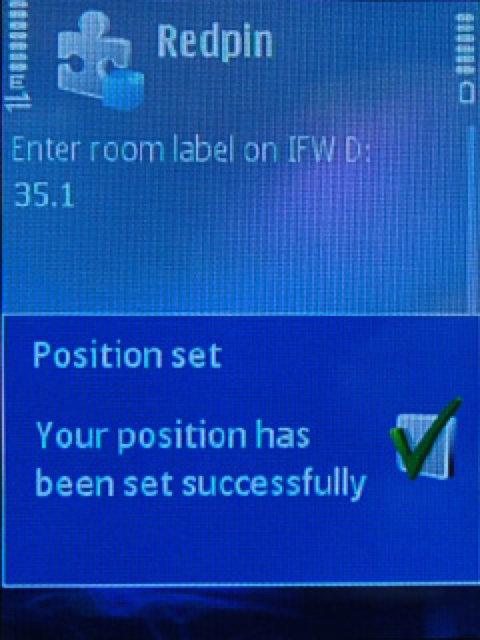

Redpin (Symbian)
Redpin consist of two basic components: a sniffer component that gathers and collects information about different wireless devices in range in order to create a fingerprint, and a locator component, which stores measured fingerprints in a repository and contains the algorithm to locate a mobile device. To allow easy, realiable and fast user collaboration, the locator is run as a central server. It is implemented using Java SE 5.0 and MySQL. We use Java Micro Edition for the GUI and all communication aspects, and Symbian Series 60 for the sniffer component. This separation was necessary, as only the Symbian API would allow us to get the information we wanted to collect. For both the server and the mobile client, we used the Open Bandy library to handle the serialization, transmission, and storage of the measured data.
How to install
All Redpin components are available as either Eclipse or Carbide projects and can be downloaded from the Redpin sourceforge site via SVN. The midlet and the server can also be downloaded as a jar file from the download section here.Redpin Sniffer (Symbian S60)
- Install Carbide and S60 3rd edition FP1 SDK (FP2 can also be used).
Here you can also find useful information about the above installations steps. - Check out the 'RedpinSniffer' project from the Redpin sourceforge site into your Carbide workspace.
- Build it.
- Sign the .sis file.
- Install the sis file on the phone (using Bluetooth or USB).
Redpin Mobile (J2ME)
- Install Eclipse and the J2ME SDK of your choice (we recommend the Sun WTK 2.5.2).
- Install EclipseME and configure Eclipse accordingly.
- Check out the 'Redpin' project from the Redpin sourceforge site into your Eclipse workspace.
- Create the MIDlet package (i.e., the jar file).
- Install the resulting jar file on the phone (using Bluetooth or USB).
Redpin Server (J2SE)
- Check out the 'RedpinServer' project from the Redpin sourceforge site into your Eclipse workspace.
- Install MySQL Community Server and run the 'redpin.sql' script from the conf directory within the RedpinServer project to configure the database.
- Set the database access credentials by setting the 'DatabaseConnectionProperties' in the class 'RedpinServer.java'.
- Launch 'RedpinServer'.
Starting-up Redpin
- Launch the Repin server.
- Turn on Bluetooth on the phone.
- Launch the 'RedpinSniffer' application on the phone.
- Choose 'StartSocketServer' from the options menu.
- Keep the RedpinSniffer running in background and launch the 'Redpin' Java MIDlet on the phone.
- Have fun!
Preloading Map Images
- Save map image as png, gif or jpeg.
- Upload image file to your web-server.
- Create an entry in the redpin database-table 'map' (e.g. insert into map (mapName, mapURL) values ("IFW A", "http://www.redpin.org/resources/maps/layout_IFW_A.gif"))
Redpin in Action
- (a) During initialization, Redpin is sniffing for some data
- (b) Redpin asks to the database if the measurment match with some known location
- (c) If the location is unknown you're promted to enter the data for the new location
- (d) You choose a floorplan from a list of available maps
- (e) Set the marker to your current position
- (f) You enter the location name
- (g) The data is saved in the database
- (h) A red pulsing circle is showing the last current location




